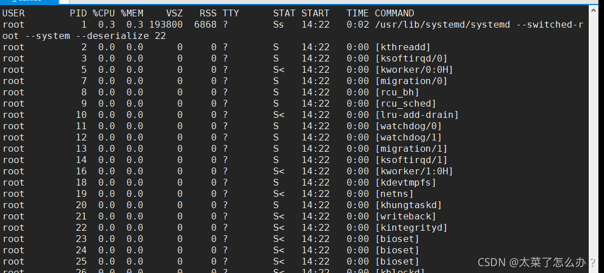
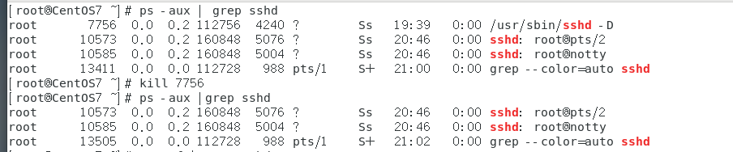

一、Linux概述
unix和LInux的关系
LInux的应用领域
服务器领域
-
Linux在服务器领域的应用是最强的
-
LInux免费、稳定、高效等特点在这里得到了很好的体现，尤其是在一些高端领域尤为广泛
嵌入式领域
- linux运行稳定、对网络的良好支持性、低成本，且可以根据需要进行网络裁剪，内核最小可达到几百kb的特点，使近些年来在嵌入式领域的应用得到非常大的提高
- 主要应用:机顶盒、数字电视、网络电话、程控交换机、手机、PDA、智能家居、智能硬件等都是其应用领域。以后在物联网中应用会更加广泛。
LInux的吉祥物

- 名称：tux
Linux主要的发行版本
Ubuntu（乌班图）、RedHat（红帽）、CentOS
vm与Linux的关系
VMware网络连接的三种模式
桥接模式
-
VMWare会虚拟一块网卡和真正的物理网卡就行桥接，这样，发到物理网卡的所有数据包就到了VMWare虚拟机，而由VMWare发出的数据包也会通过桥从物理网卡的那端发出。桥接网络是指本地物理网卡和虚拟网卡通过VMnet0虚拟交换机进行桥接。相当于在一个局域网内创立了一个单独的主机，他可以访问这个局域网内的所有的主机
-
该模式下主机网卡和虚拟机网卡的IP地址处于同一个网段，子网掩码、网关、DNS等参数都相同
-
桥接模式下虚拟机和主机在网络上地位相等，可以理解为一台新的电脑
NAT模式
-
虚拟系统会通过真实主机的网络来访问外网，而真实主机相当于有两个网卡：真实网卡和虚拟网卡，真实网卡相当于链接了现实世界的真实路由器，而虚拟网卡相当于链接一个虚拟交换机/路由器（这个虚拟交换机同时链接虚拟机和真实主机）,此时虚拟机想访问外网就必须通过真实主机IP地址，而外面看来也确实是真实主机的IP地址，实则是虚拟机访问的，完全看不到虚拟网络局域的内部形式。
-
网络地址转换模式。虚拟机系统可以和外部系统通讯，不早造成IP冲突

主机模式
- 他就是一个独立的系统，不和外界发生联系
二、Linux目录结构（重点）
2.1基本介绍
- linux的文件系统是采用级层式的树状目录结构，在此结构上的最上层是根目录“/"，然后在此目录下在创建其他的目录。
- 深刻理解linux树状文件目录是非常重要的
- 记住一句很经典的话：在LInux世界里，一切皆文件
2.2具体的目录结构
-
/bin 【常用】（/usr/bin、/uer/local/bin)
是Binary的缩写，这个目录存放着最常使用的命令
-
/sbin （/usr/sbin、/usr/local/sbin）
s就是Super user的意思，这里存放的是系统管理员使用的系统管理程序
-
/home 【常用】
存放普通用户的主目录，在Linux中每个用户都有一个自己的目录，一般该目录是以用户的账号命名
-
/root 【常用】
该目录为系统管理员，也称作超级权限者的用户主目录
-
/lib 系统开机所需要的最基本的动态链接共享库，起作用类似于Windows里的DLL文件。几乎所有的应用程序都需要用到这些共享库
-
/lost+found 这个目录一般情况下是空的，当系统非法关机后，这里就存放了一些文件
-
etc 【常用】
所有的系统管理所需要的配置文件和子目录，比如安装mysql数据库，my.conf
-
/usr 【常用】
这是一个非常重要的目录，用户很多应用程序都放在这个目录下，类似于windows下的program files目录。
-
/boot 【常用】
存放的是启动Linux时使用的一些核心文件，包括一些链接文件以及镜像文件
-
/proc 这个目录是一个虚拟的目录，他是系统内存的映射，访问这个目录来获取系统信息
-
/srv service缩写，该目录存放一些服务器启动后需要提取的数据
-
/sys 这是linux2.6内核的一个很大的变化，该目录下安装了2.6内核中新出现的一个文件系统sysfs
-
/tmp这个目录是用来存放一些临时文件的
-
/dev
类似于windows的设备管理器，把所有的硬件用文件的形式存储
-
/media【常用】linux系统会自动识别一些设备，例如U盘，光驱等等，当识别后，linux会把识别的设备挂载到这个目录下
-
/mnt 【常用】
系统提供该目录是为了让用户临时挂载别的系统文件，我们可以将外部的存储挂载在/mnt/上，然后进入该目录就可以查看里面的内容了。D:/mushare
-
/opt 这是给主机额外的安装软件所存放的目录。如安装ORACLE数据库就可以放到该目录下。默认为空
-
/usr/local【常用】
这是另一个给主机额外安装软件所安装的目录。一般是通过编译源码的方式安装的程序
-
/var 【常用】
这个目录中存放着在不断扩充的东西 ，习惯的将经常修改的目录放在这个目录下。包括各种日志文件
-
/selinux 【security-enhanced linux】
SELinux是一种安全子系统，他能控制程序自能访问特定的文件，有三种工作模式，可以自行设置
三、vi和vim编辑器
3.1 vi和vim的基本介绍
Linux系统会内置vi文本编辑器
Vim具有程序编辑的能力，可以看做是Vi的增强版本，可以主动的以字体颜色辨别语法的正确性，方便程序设计。代码补完、编译错误跳转等方便编程的功能相当丰富，在程序员中被广泛使用。（vim就是vi的增强版）
3.2 vi和vim常用的三种模式
- 正常模式
以vim打开一个档案就直接进入一般模式了（这是默认的模式）。在这个模式中，可以使用【上下左右】键来移动光标，你可以使用【删除字符】或【删除整行】来处理档案内容，也可以使用【复制、粘贴】来处理你的文件数据。
- 插入模式
按下i，I，o，O，a，A，r，R等任何一个字母之后才会进入编辑模式，一般来说按i就可
- 命令行模式
在这个模式中，可以提供你相关指令，完成读取、存盘、替换、离开vim、显示行号等动作则是在此模式中达成的！

四、LInux开机，重启和用户登录注销
4.1关机和重启的命令
- 基本介绍
shutdown -h now 立刻进行关机
shutdown -h 1 ”hello，1分钟后会关机了“
shutdown -r now 现在重新启动计算机
halt 关机
reboot 重新启动
syn 把内存的数据同步到磁盘
- 1
- 2
- 3
- 4
- 5
- 6
- 注意细节
1.不管是重启系统还是关闭系统，首先要运行sync命令，把内存中的数据写到磁盘中
2.目前的shutdown/reboot/halt等命令均已在关机前进行了sync
4.2用户登录和注销
- 基本介绍
1、登陆时尽量少用root账号登录，因为他是系统管理员，最大的权限，避免操作失误。可以利用普通用户登录，登陆后再用”su - 用户名“命令来切换成系统管理员身份
2、在提示符下输入logout即可注销用户
- 使用细节
logout注销指令在图形运行级别无效，在shell界面有效
五、用户管理
5.1基本介绍
Linux系统是一个多用户多任务的操作系统，任何一个要使用系统资源的用户，都必须先向系统管理员申请一个账号，然后以这个账号的身份进入系统
5.2添加用户
- 基本语法
useradd 用户名
- 1
- 实列(root权限下)
useradd hucheng
添加一个用户chucheng，默认该用户的家目录在/home/hucheng
- 1
- 2
- 细节说明
1、当用户创建成功后果，会自动的创建和用户同名的家目录
2、也可以通过useradd -d 指定目录 新的用户名 来给新创建的用户指定家目录
- 1
- 2

新建用户zhanzhiwen的home目录下的文件夹名称是muluming
- 1
5.3指定/修改密码
- 基本语法
passwd 用户名
- 1
- 实例
- 补充，显示当前用户所在的目录pwd
5.4 删除用户
- 基本语法
userdel 用户名
userdel -r 用户名
- 1
- 2
- 实例
1.删除用户zhanzhiwen，但是要保留目录
2.删除用户以及用户主目录 ，userdel -r 用户名

5.5查询用户信息指令
- 基本语法
id 用户名
- 1
- 实列
- 细节说明
当用户不存在是，返回无此用户
5.6切换用户
- 介绍
在操作Linux时，如果当前用户的权限不够，可以通过su - 指令，切换到更高权限的用户，如root
- 基本语法
su - 用户名
- 1
- 实列说明
- 细节说明
1.从权限高的用户切换到权限低的用户时，不需要输入密码，反之需要
2.当需要返回到原来用户时，使用exit/logout指令
5.7 查看当前用户/登录用户
- 基本语法
whoami/who am i
- 1
-
实例

-
细节说明
查看的是登录的用户！
5.8 用户组
- 介绍
类似于角色，系统可以对有共性/权限的多个用户进行统一的管理
- 新增组
指令：groupadd 组名
- 1
- 删除组
指令（基本语法）：groupdel 组名
- 注意：如果当添加用户时没有指定组，会默认创建和这个用户同名的组，同时把用户放到该组里

- 增加用户时直接加上组
指令：useradd -g 用户组 用户名
- 1

- 移动组
usermod -g 组名 用户名
- 1

5.9 用户和组相关文件
- /etc/passwd 文件
用户（user）的配置文件，记录用户的各种信息
每行的含义：用户名：口令：用户标识号：组标识号：注释性描述：主目录：登录Shell
- /etc/shadow文件
口令配置文件
每行的含义：登录名：加密口令：最后一次修改时间：最小时间间隔：最大时间间隔：警告时间：不活动时间：失效时间：标志
- /etc/group文件
组（group）的配置文件，记录Linux包含的组的信息
每行含义：组名：口令：组标识号：组内用户列表
六、Linux实践——实用指令
6.1指定运行级别
- 基本介绍
运行级别说明：
0：关机
1：单用户【找回丢失密码】
2：多用户状态没有网络服务
3：多用户状态有网络服务
4：系统未使用保留给用户
5：图形界面
6：系统重启
常用运行级别是3和5，也可以指定默认运行级别
- 应用实例
命令：init[0123456]应用案例：通过init来切换不同的运行级别，比如动5-3，然后关机
查看当前的运行级别 systemctl get-ddefault
- 1

改变为 systemctl set-default multi-user.target
- 1
6.2帮助指令
- man获得帮助信息
基本语法：man [命令或配置文件]（功能描述：获得帮助信息）
- 1
在linux下隐藏文件是以 “.” 开头的
- help指令
基本语法：help 命令 （功能描述：获得shell内置命令的帮助信息）
- 1
6.3文件目录类
- pwd指令
基本语法：pwd （功能描述：显示当前工作目录的绝对路径）
- 1
- ls指令
基本语法：ls [选项] [目录或是文件]
- 1
常用选项
-a ： 显示当前目录所有的文件和目录，包括隐藏的
-l ： 以列表的方式显示信息
- cd指令
基本语法：cd [参数] （功能描述：切换到指定的目录）
- 1
理解：绝对路径和相对路径（相对路径是针对当前位置的路径）
cd ~ 或者cd 回到自己的家目录
cd … 回到当前目录的上一级目录
- mkdir指令
基本语法：mkdir [选项] 要创建的目录
- 1
理解：mkdir指令用于创建目录（默认只能创建一级目录）
-p :创建多级目录
- rmdir指令（用于删除空目录）
基本语法：rmdir [选项] 要删除的空目录
- 1
使用细节：
rmdir删除的是空目录，如果欲删除的目录下有内容则无法删除
==如果需要删除非空目录，需要使用rm -rf 要删除的目录
- touch指令（用于创建空文件）
touch 文件名称
- 1
- cp指令（copy拷贝文件导指定目录）
cp [选项] source dest
- 1
常用选项：-r 递归复制真个文件夹
应用实例:
将 /home/hello.txt 拷贝到 /home/bbb 目录下
cp /home/hello.txt /home/bbb
- 1
递归复制整个文件夹，将/home/aaa 目录下的文件全部拷贝到/home/bbb下
cp -r /home/aaa /hom/bbb
(是将整个目录和目录本身拷贝进来)
- 1
- 2
使用强制覆盖不提示的方法：\cp
- rm指令（remove，移除文件或目录）=一定要小心！！！
基本语法：rm [选项] 要删除的文件或目录
- 1
常用选项
-r : 递归删除整个文件夹
-f ：强制删除不提示
使用细节：强制删除不提示的方式，带上-f参数即可
- mv指令（move，移动文件与目录或重命名)（以可剪切文件夹）
mv oldNameFile newNamefile (功能描述：重命名)
mv /temp/movefile /targetFolder (功能描述：移动文件，剪切)
- 1
- 2
- cat指令（查看文件内容）
cat [选项] 要查看的文件
- 1
常用选项： -n 显示行号
使用细节：cat只能浏览文件，而不能修改文件，为了浏览方便，一般会带上管道命令 |more
cat -n /etc/profile |more
- 1
- more指令
more指令是一个基于VI编辑器的文本过滤器，它以全屏幕的方式按页显示文本文件的内容。more指令中内置了若干快捷键（交互的指令）
基本语法：more 要查看的文件
- 1
操作说明
- ln指令
软连接也称为符号链接，类似于windows里的快捷键方式，主要存放了连接其他文件的路径
基本语法：ln -s [原文件或目录] [软链接名]（功能描述：给原文件创建一个软链接）
- 1
- history指令
查看已经执行过历史命令，也可以执行历史指令
history 显示所有的历史命令
history 10 显示最近使用过的10个指令
!5 执行历史编号为5的指令
- 1
- 2
- 3
6.4时间日期类
- date指令-显示当前日期
基本语法：
date 显示当前时间
date +%Y 显示当前年份
date +%m 显示当前月份
date +%d 显示当前是哪一天
date "+%Y-%m-%d %H:%M:%S" 显示年月日时分秒
- 1
- 2
- 3
- 4
- 5
- 6
date指令还可以设置日期
date -s 字符串时间
date -s "2021-6-20 16:44:30"
- 1
- 2
- cal指令
查看日历指令
cal [选项] （功能描述：不加选项，显示本月日历）
cal 2021 显示2021整年的日历
- 1
- 2
6.5搜索查找类
-
find指令
find指令指令 将从指定目录向下递归遍历各个子目录，将满足条件的文件或者目录显示在终端上
find [搜索范围] [选项]
- 1
选项说明（可填选项）
| 选项 | 功能 |
|---|---|
| -name<查询方式> | 按照指定的文件名查找模式查找文件 |
| -user<用户名> | 查找属于指定用户名所有文件 |
| -size<文件大小> | 按照指定的文件大小查找文件 |
说明：当查询路径下无该文件，就不会有任何显示
- locate指令
locate指令可以快速定位文件路径。locate命令利用事先建立的系统中所有文件名称及路径的locate数据库实现快速定位的文件名。Locate指令无需遍历整个文件系统，查询速度较快。为了保障查询结果的准确度，管理员必须定期更新locate时刻
基本语法：locate 搜索文件
- 1
特别说明：由于locate指令基于数据进行查询，所以第一次运行前，必须是使用updatedb指令创建locate数据库
- which指令 ，可以查看某个指令在哪个目录下
- grep指令和管道符号 |
grep过滤查找，管道符，“|“，表示将前一个命令输出传递给后面的命令处理
基本语法：grep [选项] 查找内容 源文件
- 1
选项：
-n 显示匹配行及行号
-i 忽略字母大小写
两种写法
cat /home/hello.txt |grep -n "yes" hello.txt文件夹中输出同样的
grep -n "yes" /home/hello.txt
- 1
- 2
6.6 压缩和解压
- gzip/gunzip指令
gzip用于压缩文件，gunzip用于解压文件的
gzip文件 （功能描述：压缩文件，只能将文件压缩为*.gz文件
gunzip文件 （功能描述：解压文件命令）
- 1
- 2
- zip/unzip指令
zip用于压缩文件，unzip用于解压的，在整个项目打包发布中很有用的
zip [选项] xxx.zip 将要压缩的内容（一般是文件和文件夹）
uzip [选项] xxx.zip （功能描述：解压文件）
- 1
- 2
zip的常用项： -r 递归压缩，即压缩目录
zip -r myhome.zip /home/
unzip的常用项 ： -d<目录> : 指定解压后文件的存放目录
unzip -d
- tar指令
tar指令是打包指令，最后打包后的文件是.tar.gz的文件。
tar [选项] xxx.tar.gz 打包的内容 （功能描述：打包目录，压缩后的格式.tar.gz)
- 1
选项说明
| 选项 | 功能 |
|---|---|
| -c | 产生.tar打包文件 |
| -v | 显示详细信息 |
| -f | 指定压缩后的文件名 |
| -z | 打包同时压缩 |
| -x | 解包.tar文件 |
案例1：压缩多个文件，将/home/pig.txt和/home/cat.txt 压缩成 pc.tar.gz
tar -zcvf pc.tar.gz
案例2：将/home的文件夹压缩成myhome.tar.gz
tar -zcvf myhome.tar.gz /home/
案例3：pc.tar.gz 解压到当前目录
tar -zxvf pc.tar.gz
案例4：将myhome.tar.gz 解压到/opt/tmp2目录下 mkdr/opt/tmp2/
tar -zxvf myhome.tar.gz -C opt/tmp2
- 1
- 2
- 3
- 4
- 5
- 6
- 7
- 8
- 9
- 10
- 11
因为解压的目标地址不是当前文件夹，要去别的文件加，所以要加-C
七、linux的主管理和权限管理
7.1Liunx组的基本介绍
- 在Linux中的每个用户必须属于一个组，不能独立于组外。
- 在Linux中每个文件都有所有者、所在组、其他组的概念
- 所有者
- 所在组
- 其它组
- 改变用户所在的组
7.2文件/目录的所有者
- 一般文件的创建者，谁创建了该文件，就自然成为该文件的所有者
- 查看文件的所有者：
指令： ls -ahl
- 1
- 修改文件所有者
指令：chown 用户名 文件名
- 1
7.3文件/目录 所在组
- 当某个用户创建了一个文件后，这个文件的所在组就是该用户所在的组
- 查看文件/目录所在组
ls -ahl
- 1
- 修改文件所在的组
chgrp 组名 文件名
- 1
7.4其他组
除文件的所有者和所在组的用户外，系统的其他用户都是文件的其它组
7.5改变用户所在组
-
在添加用户时，可以指定将该用户添加到哪个组中，同样的用root的管理权限可以改变某个用户所在的组
-
该百年用户所在组
usermod -g 组名 用户名
usermod -d 目录名 用户名改变该用户登录的初始目录
- 1
- 2
7.6权限的基本介绍
ls -l 显示的如下内容：
-rw-r--r--. 1 mikasa mikasa 141 6月 22 11:19 hello.txt
- 1
0-9位说明
- 1.第0位确定文件类型（d，-，l，c，b）
- d是目录，相当于windows的文件夹
- l是链接文件，相当于windows的快捷方式
- -是普通文件
- c是字符设备文件，鼠标，键盘
- b是块设备，比如硬盘
- 2.第1-3位确定所有者（该文件的所有者）拥有该文件的权限 --user
- 3.第4-6位确定所属组（同用户组的）拥有该文件的权限 --Group
- 4.第7-9位确定其他用户拥有该文件的权限 --Other
rwx权限详解，难点
-
rwx作用到文件
- 【r】代表可读（read）：可以读取、查看
- 【w】代表可写（write）：可以修改，但是不代表可以删除该文件，删除一个文件的前提条件是对该文件所在的目录有些权限，才能删除该文件
- 【x】代表可执行（execute）：可以被执行
-
rwx作用到目录
- 【r】代表可读（read）：可以读取，ls查看目录内容
- 【w】代表可写（write）：可以修改，对目录内创建+删除+重命名目录名
- 【x】代表可执行（execute）：可以进入该目录
7.7文件及目录权限实际案例
- ls -l 显示内容
-rwxrw-r-- 1 root root 1213 Feb 2 09:39 abc
- 1
- 10个字符确定不同用户能对文件干什么
- 第一个字符代表文件类型： -l d c b
- 其余字符每三个一组（rwx）读（r）写（w）执行（x）
- 第一组rwx：文件拥有者的权限是读、写但不能执行
- 第二组rw-：与文件拥有者同一组的用户的权限是读、写但不能执行
- 第三组r–：不与文件拥有者同组的其他用户的权限是都只能读
- 可用数字表示为：r=4,w=2,x=1 因此rwx=4+2+1=7
- 其他说明
- 1 若是文件：硬件连接 若是目录：子目录数+文件数
- root 用户
- root 组
- 1213 文件大小（字节），如果是文件夹显示4096字节
- Feb 2 09：39 最后修改日期
- abc 文件
7.8修改权限-chmod
- 基本说明：
通过chmod指令，可以修改文件或者目录的权限。
- 第一种方式：+ 、- 、=变更权限
u:所有者(是指文件或者是目录的拥有者) q：所有组 o：其他用户 a：所有人（u、g、o的总和）
1）chmod u=rwx,g=rx,o=x 文件/目录名
2）chmod o+w 文件/目录名
3）chmod a-x 文件/目录名
1）给abc文件的所有者读写执行的权限，给所在组读执行权限， 给其他组读执行权限
chmod u=rwx,g=rx,0=x abc
2)给abc文件的所有者除去执行的权限，增加组写的权限
chmod u-x,g+w abc
3)给abc文件的所有用户添加读的权限
chmod a+r abc
- 1
- 2
- 3
- 4
- 5
- 6
- 7
- 8
- 第二种方式：通过数字变更权限
r=4 w=2 x=1 rwx=4+2+1
chmod u=rwx,g=rx,o=x 文件目录名
相当于chmod 751 文件目录
- 1
- 2
要求：将/home/abc.txt文件的权限修改成 rwxr-xr-x,使用数字的方式实现
chmod 755 /home/abc.txt
- 1
7.9修改文件所有者-chown
- 基本介绍
chown newowener 文件/目录 改变所有者
chown newonwner:newgroup 改变所有者和所在组
- 1
- 2
- -R 如果是目录则使其下所有子文件或目录递归生效（recursion）
文件 chown mikasa /home/mikasa/hello.txt
目录 chown -R mikasa /home/qianxin
- 1
- 2
7.10修改文件/所在组-chgrp
- 基本介绍
chgrp newgroup 文件/目d录 [改变所在组]
- 1
- -R 如果是目录则使其下所有子文件或目录递归生效（recursion）
7.11对文件夹(目录）的rwx的细节讨论
- x：表示可有进入到该目录，比如cd
- r：表示可以ls，将目录的内容显示
- w：表示可以在该目录删除或者创建文件
八、crond任务调度
8.1crontab 进行 定时任务的设置
-
概述
-
任务调度：是指系统在某个时间执行的特定的命令或程序。
-
任务调度分类.
- 系统工作：有些重要的工作必须周而复始地执行。如病毒扫描等
- 个别用户工作：个别用户可能希望执行某些程序，比如对mysql数据库的备份
-
基本语法
-
crontab [选项]
常用选项有：
-e 编辑crontab定时任务
-l 查询crontab任务
-r 删除当前用户所有的crontab任务
- 1
- 2
- 3
- 4
- 5

-
快速入门
-
设置任务调度文件：/etc/crontab
-
设置个人任务调度。执行crontab -e命令
-
接着输入任务到调度文件
-
如：
*/1 * * * * ls -l /etc/ > /tmp/to.txt 意思说每个小时的每分钟执行ls -l /etc/ > /tmp/to.txt 命令- 1
- 2
-
参数细节说明
-
5个占位符的说明
-
-
特殊符号说明
特殊符号 含义 * 代表任何时间。比如第一个 “ * ” 就代表一小时中每分钟都执行一次的意识 ‘ 代表不连续的时间。比如“0 8，12，16 *** 命令，就代表在每天的8点0分，12点0分，16点0分都执行一次命令 - 代表连续的时间范围。比如”0 5 * * 1-6 命令“，代表在周一到周六的凌晨5点0分执行命令 */n 代表每隔多久执行一次。比如 ” */10 * * * * 命令" ，代表每隔10分钟就执行一遍命令 -
特定时间执行任务案例

*
应用实列：
案例1：每隔1分钟，就将当前的日期信息，追加到/tmp/mydate文件中
crontab -e
*/1 * * * * data >> /tmp/mydata
案例2：每隔2分钟，将当前日期和日历都追加到/home/mycal文件中
第一步 编辑一个脚本文件
vim /home/my.sh
date >> /home/mycal
cal >> /home/mycal
第二步：
crontab -e
*/1 * * * * /home/my.sh
案列3：每天凌晨2：00将mysql数据库testdb，备份到文件中，提示：指令为mysqldump -u root -p密码 数据库 >> /home/bd.bak
第一步：crontab -e
第二步：0 2 * * * mysqldump -u root -proot testdb > /home/db.bak

- 1
- 2
- 3
- 4
- 5
- 6
- 7
- 8
- 9
- 10
- 11
- 12
- 13
- 14
- 15
- 16
- 17
8.2 at定时任务
-
基本介绍
- at命令是一次性定时计划任务，at的守护进程atd会以后台模式运行，检查作业队列来运行
- 默认情况下，atd守护进程每60秒检查作业队列，有作业时，会检查作业运行时间，如果时间与当前时间匹配，则运行此作业
- at命令是一次性定时任务计划，执行完一个任务后不再执行此任务了
- 在使用at命令的时候，一定要保证atd进程的启动，可以使用相关指令来查看
ps -ef- 1
-
at命令格式
at [选项] [时间] ctrl + D 结束at命令输入（两次）- 1
- 2

-
at命令选项

-
at时间定义的方法

-
相关方法
- atq命令，来查看系统中没有执行的工作任务
- atrm 编号 删除已经设置的任务
-
案列
- 2天后的下午5点执行/bin/ls /home

- 明天17点钟，输出时间到指定文件内 比如/root/date100.log

九、Linux磁盘分区、挂载
9.1Linux分区
- 原理介绍
-
- Linux来说无论有几个分区，分给哪一目录使用，它归根结底就只有一个根目录，一个独立且唯一的文件结构，Linux中每个分区都是用来组成整个文件系统的一部分
- Linux采用了一种叫”载入“的处理方法，它的整个文件系统包含了一整套的目录，且将一个分区和一个目录联系起来。这时要载入的一个分区将使它的存储空间在一个目录下获得
-

-
硬盘shuo’ming
- Linux硬盘分IDE硬盘和SCSI硬盘，目前基本上是SCSI硬盘
- 对于IDE硬盘，驱动驱动标识符为” hdx~ “，其中”hd“表明分区所在的设备类型，这里是指IDE硬盘了。”x“为盘号（a为基本盘，b为基本从属盘，c为辅助主盘，d为辅助从属盘），”~“代表分区，前四个分区用数字1到4表示，他们是主分区和拓展分区；从5开始就是逻辑分区。例，hda3表示为第一个IDE硬盘上的第三个主分区或拓展分区，hdb2表示为第二个IDE硬盘上的第二个主分区或拓展分区
- 对于SCSI硬盘则标识为”sdx~“，SCSI硬盘是用”sd“来表示分区所在设备的类型的，其余则和IDE硬盘的标识方式一样
-
查看所有的设备挂载情况
命令：lsblk 或者 lsblk -f- 1
- 针对第二张图
- sda下指得是分区情况
- FSTYPE 指的是文件类型
- UUID值得是分区得唯一标识符（40个位）
- MOUNTPOIN 挂载点
- sda下指得是分区情况
9.2挂载的经典案例
以增加一块硬盘为例来熟悉磁盘的相关指令和深入理解磁盘分区、挂载、卸载的概念。
如何为linux系统增加一块硬盘？
-
1.虚拟机添加硬盘
- 在vmware上实现
- 重启虚拟机
- 重启后的分区情况[外链图片转存失败,源站可能有防盗链机制,建议将图片保存下来直接上传

-
2.分区
-
分区命令
fdisk /dev/sdb- 1
-
(dev（device)这个目录中包含了所有Linux系统中使用的外部设备。但是不是存放外部设备的驱动程序。它实际上是一个访问这些外部设备的端口就。我们可以非常方便的去访问这些外部设备，和访问一个文件，一个目录没有任何区别）
-
开始对 /sdb分区
m 显示命令列表 p 显示磁盘分区 同 fdisk -l n 新增分区 d 删除分区 w 写入并退出 说明：开始分区后输入n，新增分区，然后选者p，分区类型为主分区。两次回车默认剩余全部空间。最后输入w写入分区并退出，若不保存退出输入q- 1
- 2
- 3
- 4
- 5
- 6
-
-
3.格式化
- 格式化磁盘
- 分区命令：
mkfs -f ext4 /dev/sdb1- 1
- 其中ext4是分区类型

-
4.挂载（将一个分区与一个目录联系起来）
挂载令： mount 设备名称 挂载目录 ！！卸载命令： umout 设备名称（或者已挂载的目录）- 1
- 2

用命令行挂载，重启后就会失效
-
5设置可以自动挂载
- 永久挂载：通过修改/etc/fstab实现挂载
- 添加完成后，执行mount -a立即生效
9.3磁盘情况查询
-
查询系统整体磁盘使用情况
- 基本语法
df -h- 1
- 应用实例：查询系统整体磁盘使用情况（使用率到了80以上就正常了）
-
查询指定目录的磁盘占用情况
- 基本语法
du 选型 /目录- 1
- 查询指定目录的磁盘占用情况，默认为当前目录
- 选项
-s 指定目录占用大小汇总 -h 带计量单位 -a 含文件 --max-depth=1 子目录深度 -c 列出明细的同时，增加汇总值- 1
- 2
- 3
- 4
- 5
- 案例：查询opt目录的磁盘占用情况，深度为1

-
磁盘情况-工作实用指令
-
1.统计/opt文件夹下文件的个数
ls -l /opt | grep "^-" | wc -l- 1
-
2.统计/opt文件夹下目录的个数
ls -l /opt | grep "^d" | wc -l- 1
-
3.统计/opt文件夹下文件的个数，包括子文件夹里的
ls -lR /opt | grep "^-" | wc -l- 1
-
4.统计/opt文件夹下目录的个数，包括子文件夹里的
ls -lR /opt | grep "^d" | wc -l- 1
-
5.以树状显示目录结构
yum install tree tree /home- 1
- 2
-
十、LInux网络配置
10.1Linux网络配置原理图

10.2配置一个指定的ip
- 直接修改配置文件来制定IP，并可以连接到外网（cxy推荐）
- 编辑 vim /etc /sysconfig/network-scripts/ifcfg-ens33
- 修改前

-
要求：将IP地址配置为静态的，比如ip地址为192.168.200.130
-
修改后

-
ifcfg-ens33文件说明
-
重启网络服务或者重启兄系统生效
service network restart reboot- 1
- 2
-
ping指令
ping ip(或域名) （测试连通性）
- 1
10.3设置主机名和hosts映射
-
设置hosts映射
- windows
再C:\windows\System32\drivers\etc\hosts 文件指定即可- 1
- liunx
在/etc/hosts 文件 指定- 1
-
主机名解析过程分析（hosts、DNS）
- hosts文件是什么：一个文本文件，用来记录IP和hostname（主机名）的映射关系
- DNS（Domain Name System，域名系统）：是互联网上作为域名和IP地址相互映射的一个分布式数据库
-
主机名解析机制分析
应用实例：用户在浏览器输输入了www.baidu.com-
1.浏览器先检查浏览器缓存中有没有该域名解析ip地址，有就先调用这个IP完成解析；如果没有，就检查DNS解析器缓存，如果有就直接返回ip完成解析。（这两个缓存可以理解为本地解析器缓存）
（一般来说，当电脑第一次成功访问某一网站后，在一定的时间内，浏览器或者操作系统会缓存它的ip地址DNS解析记录，如在命令行输入
ipconfig /displaydns //DNS缓存解析 ipconifg /flushdns //手动清理dns缓存- 1
- 2
-
2.如果本地解析器缓存没有找到对应的映射，则检查系统系统中的hosts文件中有没有配置对应的域名ip映射。如果有，则完成解析并返回
-
3.如果本地DNS解析器缓存和hosts文件中均没有找到对应的ip，则到域名服务DNS进行解析
-

-
十一、进程管理
11.1基本介绍
-
在Linux中，每一个执行的程序都被称为一个进程。每一个进程都被分配一个ID号（pid，进程号）
- windows下的pid

- linux：top指令

-
每个进程都可能以两种方式存在。前台与后台，所谓前台进程就是用户目前屏幕上可以进行操作的。后台进程则是实际在操作，但由于屏幕上无法看到的进程，通常使用后台方式执行。
-
一般系统的服务都是以后台进程的方式存在，而且都会常驻在系统中。直到关机才会结束
11.2显示系统执行的进程
- ps命令是用来查看目前系统中，有哪些正在执行的进程 ，以及他们的执行状况。可以不加任何参数

ps显示的信息选项
| 字段 | 说明 |
|---|---|
| PID | 进程识别号 |
| TTY | 终端机号 |
| TIME | 此进程所消耗CPU时间 |
| CMD | 正在执行的命令或进程名 |
ps -a:显示当前终端的所有进程信息
ps -u:以用户的格式显示进程信息
ps -x:显示后台进程运行的参数
- 1
- 2
- 3
- 执行ps -aux

-
参数解释
- USER：进程执行用户
- PID：进程号
- %CPU：当前进程占用cpu的百分比
- %MEM：占用物理内存的百分比
- VSZ：进程占用虚拟内存大小（KB）
- RSS：进程占用的物理内存的大小（KB）
- TTY：终端名称
- STAT：运行状态，S-表示sleep休眠、s-表示该进程是会话的先导进程，N-表示进程拥有比普通优先级更低的优先级，R-表示正在运行，D-短期等待，z-僵尸进程，T-被跟踪或者被停止等等
- STARTED：执行的开始时间
- TIME：占用CPU时间
- COMMAND：启动进程所用的命令和参数，如果过长会被截断显示
-
以全格式显示当前所有的进程，查看进程的父进程
ps -ef 是以全格式显示当前所有的进程 -e 显示所有的进程 -f 全格式 ps -ef|grep xxx 是BSD风格- 1
- 2
- 3
- 4
- 5
- 6
- 7

-
UID：用户ID
-
PID：进程ID
-
PPID：父进程ID
-
C：cpu用于计算执行优先的因子。数值越大，表明进程是CPU密集型运算，执行优先级会降低；数值越小，表明进程是I/O密集型运算，执行优先级会提高
-
STIME：进程启动时间
-
TTY：完整的终端名称
-
TIME：CPU占用时间
-
CMD启动进程所用的命令和参数
-
ps -ef|grep sshd- 1

-
sshd进程是1号进程的子进程，
-
终止进程kill和killall
- 若是某一个进程执行一半需要停止时，或是已消了很大的系统资源时，此时可以考虑停止该进程。使用kill命令来完成此项任务
- 基本语法
kill [选项] 进程号 功能描述：通过进程号杀死进程 killall 进程名称 功能描述：通过进程名杀死进程也支持通配符，这在系统因负载过的很慢时很有用- 1
- 2
-
常用选项：-9 表示强迫进程立即停止
-
案例
- 踢掉某个非法登录用户（mikasa）

ps- ef|grep sshd后可知用户mikasa登录的进程号为9583
kill 进程号
kill 9583
用户mikasa的连接关闭
- 1
- 2
- 3
- 4
- 5

- 终止远程登录服务sshd，在适当时候再次重启sshd服务

kill 7756
结束远程登录服务sshd后用户无法通过xshell连上Linux虚拟机
回复sshd服务
/bin/systemctl start sshd.service
- 1
- 2
- 3
- 4
- 5
- 终止多个gedit
killall gedit
- 1
- 强制杀掉一个终端
先ps -aux | grep bash
观察出终端的进程号
再
killall -9 bash对应的进程号
- 1
- 2
- 3
- 4

11.3查看进程树pstree
- 基本语法
pstree [选项] 可以更加直观的来看进程信息
- 1
- 常用选项
-p 树状形式显示进程的pid
-u 树状形式显示进程的所属用户
- 1
- 2
十二、服务（service）管理
12.1介绍
服务（service）本质就是进程，但是时运行在后台的，通常都会监听某个端口，等待其他程序的请求，比如（mysqld，sshd 防火墙等），因此我们又称为守护进程，是Linux中非常重要的知识点
-
service管理指令
service 服务名 [start| stop| restart| reload | status]- 1
-
在CentOS7.0后很多服务不再使用service，而是systemctl
-
service指令管理的服务在 /etc/init.d查看
-

-
案例
使用servce指令，查看，关闭，启动network[不要在xshell中执行，关闭网络后，连接sshd服务会断开连接]
- 1
-
查看服务名：
- 方式1：使用setup——>系统服务，就可以看到全部
- 带*号的服务是随着linux的启动自动启动，没有带 *号的都是需要手动启动的
- 这里记一个比较呆比的事情，退出按Tab
- 方式1：使用setup——>系统服务，就可以看到全部

-
方式2：/etc/init.d 看到service指令管理的服务ls -l /etc/init.d
-
额外扩展：为什么linux很多服务以d结尾？
- d代表deamon 守护进程
- Linux的大多数服务就是用守护进程
- 守护进程是运行在Linux服务器后台的一种服务程序
- 它周期地执行某种任务或等待处理某些发生的事件
- 比如：xinetd提供网络服务，sshd提供ssh登录服务，httpd提供web服务
12.2服务的运行级别
- linux系统有七种运行级别（runlevel）：常用的是级别3和5
- 运行级别0：系统停机状态，系统默认运行级别不能设为0，否则不能正常启动
- 运行级别1：单用户工作状态，root权限，用于系统维护，禁止远程登录
- 运行级别2：多用户状态（没有NFS），不支持网络
- 运行级别3：完全的多用户状态（有NFS），登录后进入控制台命令行模式
- 运行级别4：系统未使用，保留
- 运行级别5：X11控制台，登陆后进入图形GUI模式
- 运行级别6：系统正常关闭并重启，默认运行级别不能设为6，否则不能正常启动
- 开机的流程说明

-
CentOS7运行级别说明
- 在/etc/initab，进行了简化如下
multi-user.target:analogous to runlevel 3 graphical.target:analogous to runlevel 5- 1
- 2
-
#to view current default target,run: systemctl get-default- 1
- 2
-
#To set a default target,run: systemctl set-default TARGET.target- 1
- 2
12.3chkconfig指令
- 介绍
- 1.通过chkconfig命令可以给服务的各个运行级别设置自 启动/关闭
- 2.chkconfig指令管理的服务在 /etc/init.d查看
- 注意：CentOS7.0后，很多服务使用systemctl管理
- 基本语法
chkconfig --list [| grep xxx] 查看服务
chkconfig 服务名 --list 查看服务
chkconfig --level 5 服务名 on/off 对服务在各等级下的状态进行控制
- 1
- 2
- 3

- 案列
对network服务进行操作，把network在3运行级别关闭自启动
chkconfig --level 3 network off
- 1
- 2
- 注意：chkconfig重新设置服务后自启动或关闭，需要重启机器reboot生效
12.4systemctl命令
-
systemctl管理命令
systemctl [start | stop |restart |status ] 服务名- 1
- systemctl指令管理的服务咋/usr/lib/systemd/system中查看
-
systemctl设置服务的自启动状态
systemctl list-unit-files [|grep 服务名] (查看服务开机启动状态，grep可进行过滤) systemctl enable 服务名 （设置服务开机启动） systemctl disable 服务名 (关闭服务开机启动)关闭和开启都是默认的3和5两级别 systemctl is-enabled 服务名 (查询某个服务是否是自启动的)- 1
- 2
- 3
- 4
-
引用案列：
ll /usr/lib/systemd/system |grep fire 查找防火墙服务 systemctl list-unit-files | grep firewalld 查看当防火墙的服务状态 systemctl is-enabled firewalld 查看防火墙服务是否是自启的 查看当前防火墙的状态，关闭防火墙和重启防火墙 systemctl status firewalld 停止防火墙 systemctl stop firewalld 启动防火墙、 systemctl s- 1
- 2
- 3
- 4
- 5
- 6
- 7
- 8
- 9
- 10
- 11
- 12
- 13
- 14
- 15
-
细节点
- 关闭或者启动防火墙后，立即生效。[telnet测试 某个端口即可]
- 这种方式只是临时生效，当重启系统后，还是回归以前对服务的设置
- 如果希望设置某个服务自启动或关闭永久生效，要使用systemctl [enable|disable]服务名
12.5打开或者关闭指定端口
在真正的生产环境，往往需要将防火墙打开，来了，如果我们把防火墙打开，那么外部请求数据包就不能给服务器监听端口通讯。，这时，需要打开指定的端口。比如80，22，8080 该怎么做呢
-
firewall指令
- 打开端口
firewall-cmd --permanent --add-port=端口号/协议- 1
- 关闭端口
firewall-cmd --permanent --remove-port =端口号/协议- 1
- 无论是关闭还是开启端口都需要重新载入防火墙才能生效
firewall-cmd --reload- 1
- 查询端口是否开放
firewall-cmd --query-port=端口/协议- 1
-
案例
-
启用防火墙，测试111端口是否能telnet
-
开放111端口

-
再次关闭111端口

-
十三、动态监控
13.1介绍
top和ps命令很相似。他们都用来显示正在执行的进程Top和ps最大的不同处在于top在执行一段时间可以更行正在运行的进程
- 基本语法
top [选项]
- 1
- 选项说明
| 选项 | 功能 | 实例 |
|---|---|---|
| -d 秒数 | 指定top命令每隔几秒更新。默认是3秒 | top -d 5 |
| -i | 是top不显示任何闲置或者僵死进程 | |
| -p | 通过指定监控进程ID来仅仅监控某个进程的状态 |
-
僵死进程：进程已经死掉了（进程运行结束），但是内存没有被释放掉。僵死进程需要定时清除！！
-
其中cpu使用率和KiB Mem(内存管理）最为重要
13.2动态监控进程的交互操作
- 交互操作说明
| 操作 | 功能 |
|---|---|
| P | 以CPU施一公率排序，默认就是此项 |
| M | 以内存使用率排序 |
| N | 以PID排序 |
| q | 退出top |
-
实例
案例1.监视特定用户，比如说监控mikasa用户 top：输入此命令，按回车键，查看执行的进程 然后输入“u”,回车，在输入用户名，即可 案例2：终止指令的进程 先输入top指令后，在输入“k“ ，在输入想要终止的进程号 案例3：指定系统状态更新的时间（每隔10秒自动更新）（默认的是3秒） top -d 10- 1
- 2
- 3
- 4
- 5
- 6
- 7
- 8
- 9
13.3监控网络状态
-
查看系统网络情况netstat
- 基本语法
netstat [选项]- 1
- 选项说明
-an 按一定顺序排列输出 -p 显示哪个进程在用- 1
- 2
-
检测主机连接命令ping
- 是一种网络检测工具，它主要是用来检测远程主机是否正常，或是两部主机间的网线或网卡故障
十四、RPM与YUM
14.1rpm包的管理
-
介绍
- rpm用于互联网下载包的打包及安装工具，它包含在某些LInux分发版中。它生成具有.RPM拓展名的文件。RPM是RedHat Package Manager （RedHat软件包管理工具）的缩写，类似windows的setup.ext，这一文件格式名称虽然打上了RedHat的标志，但理念是通用的。
- Linux的分发版都有采用（suse，redhat，centos等），可以说是公用的行业标准。
-
rpm包的简单查询指令
- 查询已安装的rpm列表
rpm -qa|grep xxx 查看当前系统是否安装firefoxrpm -qa | grep firefox- 1
- 2
- 3

- rpm包名基本格式
一个rpm包名：firefox-60.2.2-1.el7.centos.x86_64 名称：firefox 版本号：60.2.2-1 适用操作系统：el7.centos.x86_64 表示centos7.x的64位系统 （如果似乎i686、i386表示32位系统，noarch表示通用）- 1
- 2
- 3
- 4
- 5
-
rpm包的其它查询指令
- rpm -qa 查询所安装的所rpm包软件包
rpm -qa | more rpm -qa | grep xxx(如：rpm -qa | grep firefox)- 1
- 2
- rpm -q 软件包名 查询软件包信息
案例：rpm -q firefox- 1
- rpm -qi 软件包名 查询软件包信息
rpm -qi firefox- 1

- rpm -ql 软件包名 查询软件包中的文件
- rpm -qf 文件全路径名 查询文件所属的软件包
rpm -af /etd/shadow
- 1

- 1
-
安装rpm包
- 基本语法
rpm -ivh RPM包全路径名称 rpm -ivh /opt/firefox (先按tab补全再回车)- 1
- 2
- 3
- 参数说明
i=install 安装 v=verbose 提示 h=hash 进度条- 1
- 2
- 3
-
卸载rpm包
- 基本语法
rpm -e RPM包的名称 //erass rpm -e firefox 删除firefox 软件包- 1
- 2
- 3
-
注意
- 如果其它软件包依赖于要卸载的软件包，卸载时则会产生错误的信息
- 如果必须要删除这个软件包，可以增加参数 --nodeps，就可以强制删除，但是一般不推荐这么做，因为依赖于该软件包的程序可能无法运行
rpm -e --nodeps 软件包名- 1
14.2yum
-
介绍：Yum是一个Shell前端软件包管理器。基于RPM包管理，能够从指定的服务器自动下载RPM包并安装，可以自动处理依赖关系，并且一次安装所有依赖的软件包
-
yum的基本指令
查询yum服务器是否有需要安装的软件（软件列表） yum list|grep xx 安装指定的yum包（下载安装 yum install xxx- 1
- 2
- 3
- 4
- 5
-
实列：使用yum的方式安装firefox
rpm -e firefox 先卸载centos中的firefox yum list | grep firefox 查询firefox的软件 yum install firefox 下载！- 1
- 2
- 3


 写评论
写评论 703
703


 被折叠的 0 条评论
为什么被折叠?
被折叠的 0 条评论
为什么被折叠?
 到【灌水乐园】发言
到【灌水乐园】发言